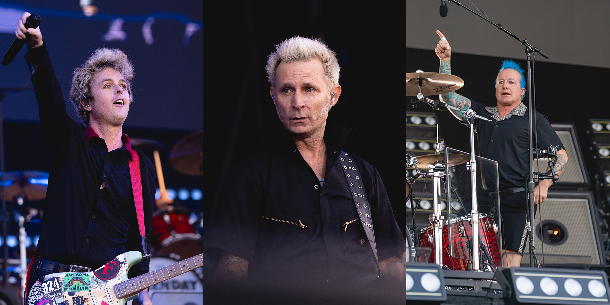

Green Day

Green Day is an American punk rock band that was popular in the 90s and 2000s. The band consists of three members: Billie Joe Armstrong: the singer; Mike Dirnt: the bassist; Tré Cool: the drummer.
Their History
Green Day began in 1987 as a small band only known in their local area. Their name was Sweet Children but they changed it to Green Day because a band called Sweet Baby Jesus already existed in their area. When the band was formed the drummer was John Kiffmeyer but he left in 1990 and was replaced with Tré Cool.
Their Political View
Green Day is strongly left-leaning and anti-corporate. They are anti-war, as voiced in American Idiot, and anti-trump. They even changed lyrics in their song American Idiot to mock the MAGA (make America great again) agenda. They target conservative politics, fascism, and nationalism in their concerts.
Their Albums
Green Day has 14 studio albums throughout their career, from their 1990 debut to to their most recent 2024 album. The list below contains links to each album and some information about them.
Studio Albums In Order:
Green Day's Major Events
Comparison
Now you know all about Green Day! It's now time to go further and really make our inquiry unlike the others. Click the link below that says: Comparison to see next!
Finish
Thank you to everyone who got this far in our website and was actually intrigued by what we have created. You are the reason we made this inquiry.
Thank you and goodbye,
Noah B and Noah G